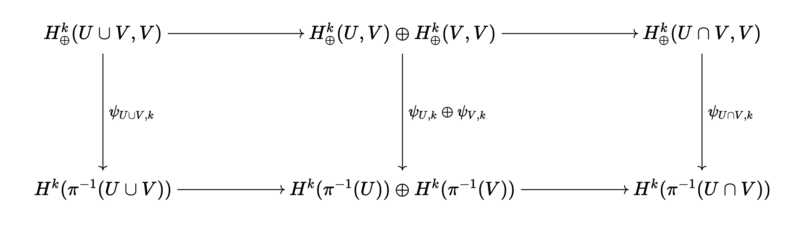
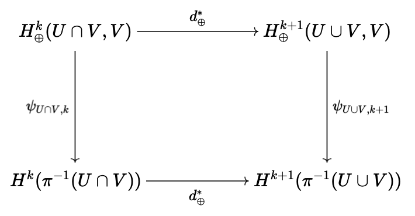
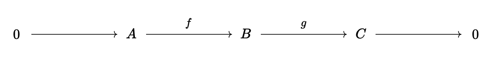

Leray-Hirsch theorem
Table of Contents
Originally posted: July 1st, 2025
1. Introduction
Happy Canada Day to my Canadian compatriots! Short post today: this is a proof of the Leray-Hirsch theorem. I don't know why I've never proved this before. Very lame of me.
2. Leray-Hirsch theorem
Theorem 2.1 (Leray-Hirsch). Let \(\pi : E \rightarrow M\) be a smooth, oriented fibre bundle over oriented manifold \(M\) with oriented model fibre \(F\) which has a finite good cover (a finite cover where all finite intersections are diffeomorphic to \(\mathbb{R}^n\)) which also trivializes the fibre bundle. Let \(\iota : F \rightarrow E\) be an inclusion map sending fibre \(F\) to \(\pi^{-1}(b) \subset E\), which gives map \(\iota^{*} : H^{\bullet}(E) \rightarrow H^{\bullet}(F)\). To be more specific, we can choose neighbourhood \(U\) of \(b\), so that \(\Phi : \pi^{-1}(U) \rightarrow U \times F\) is a diffeomorphism, so \(\iota\) takes \(x \in F\) to \(\Phi^{-1}(b, x)\). Suppose there exists global cohomology classes \([e_1^{(k)}], \dots, [e_{N_k}^{(k)}] \in H^{k}(E)\) such that the images \(\iota^{*}([e_j^{(k)}])\) freely generate \(H^{k}(F)\) for each \(k\) (a real vector space: this is the sense in which we mean "freely generate"). Then
\begin{equation} H^{\bullet}(E) \simeq H^{\bullet}(M) \otimes H^{\bullet}(F) \end{equation}Proof. Define for open \(U \subset M\), the maps \(\psi_{U, k} : \bigoplus_{p = 0}^{k} H^{p}(U) \otimes \mathbb{R}[[e^{(k - p)}_1], \dots, [e^{(k - p)}_{N_{k - p}}]] \rightarrow H^{k}(\pi^{-1}(U))\) by
\begin{equation} \psi_{U, k}([\omega] \otimes [e_j^{(k - p)}]) = \pi^{*}_U [\omega] \wedge J_U^{*} [e_j^{(k - p)}] \end{equation}where \(J_U : \pi^{-1}(U) \rightarrow E\) is inclusion and \(\pi_U : \pi^{-1}(U) \rightarrow U\) is simply \(\pi\) restricted. The idea is to construct a five-term exact sequence to prove that this map is an isomorphism. Recall that we have the Mayer-Vietoris sequence
\begin{equation} \cdots \longrightarrow H^p(U \cup V) \longrightarrow H^p(U) \oplus H^p(V) \longrightarrow H^p(U \cap V) \longrightarrow \cdots \end{equation}We can take the tensor product at each term in the exact sequence with \(V^{k - p} = \mathbb{R}[[e^{(k - p)}_1], \dots, [e^{(k - p)}_{N_{k - p}}]]\) to yield another exact sequence
\begin{equation} \cdots \longrightarrow H^p(U \cup V) \otimes V^{k - p} \longrightarrow (H^p(U) \otimes V^{k - p}) \oplus (H^p(V) \otimes V^{k - p}) \longrightarrow H^p(U \cap V) \otimes V^{k - p} \longrightarrow \cdots \end{equation}where we simply tensor all of the original maps with the identity. It is clear why this new sequence remains exact. Similarly, we can take the direct sum of exact sequences to get another exact sequence, in the obvious way:
\begin{equation} \cdots \longrightarrow \bigoplus_{p = 0}^{k} H^p(U \cup V) \otimes V^{k - p} \longrightarrow \bigoplus_{p = 0}^{k} (H^p(U) \otimes V^{k - p}) \oplus (H^p(V) \otimes V^{k - p}) \longrightarrow \bigoplus_{p = 0}^{k} H^p(U \cap V) \otimes V^{k - p} \longrightarrow \cdots \end{equation}Let \(H^k_{\oplus}(U, V) = \bigoplus_{p = 0}^{k} H^p(U) \oplus V^{k - p}\), so using shorthand, the above exact sequence can be written as
\begin{equation} \cdots \longrightarrow H^k_{\oplus}(U \cup V, V) \longrightarrow H^k_{\oplus}(U, V) \oplus H^k_{\oplus}(V, V) \longrightarrow H^k_{\oplus}(U \cap V, V) \longrightarrow \cdots \end{equation}From here, we claim that the diagram:

commutes. The first map corresponding to the top arrow of the first square is of course just the pullback of inclusion tensored with the identity,
\begin{equation} F : [\omega] \otimes [e_j^{(k - p)}] \mapsto (j_U^{*} [\omega] \otimes [e_j^{(k - p)}]) \oplus (j_V^{*} [\omega] \otimes [e_j^{(k - p)}]) \end{equation}while the bottom map is \(G : [\omega] \mapsto \iota_{\pi^{-1}(U)}^{*} [\omega] \oplus \iota_{\pi^{-1}(V)}^{*} [\omega]\). From here,
\begin{align} (G \circ \psi_{U \cup V, k})([\omega] \otimes [e_j^{(k - p)}]) &= (j_{\pi^{-1}(U)}^{*} \oplus j_{\pi^{-1}(V)}^{*})(\pi_{U \cup V}^{*} [\omega] \wedge J_{U \cup V}^{*} [e_j^{(k - p)}]) \\ &= \left( (\pi_{U \cup V} \circ j_{\pi^{-1}(U)})^{*} [\omega] \wedge (J_{U \cup V} \circ j_{\pi^{-1}(U)})^{*} [e_j^{(k-p)}] \right) \oplus \left((\pi_{U \cup V} \circ j_{\pi^{-1}(V)})^{*} [\omega] \wedge (J_{U \cup V} \circ j_{\pi^{-1}(V)})^{*} [e_j^{(k-p)}] \right) \\ &= \left( (j_{U} \circ \pi_U)^{*} [\omega] \wedge (j_U \circ J_U)^{*} [e_j^{(k-p)}] \right) \oplus \left((j_V \circ \pi_V)^{*} [\omega] \wedge (j_V \circ J_V)^{*} [e_j^{(k-p)}] \right) \\ &= \psi_{U, k}\left( j_U^{*} [\omega] \otimes [e_j^{(k-p)}] \right) \oplus \psi_{V, k} \left( j_V^{*} [\omega] \otimes [e_j^{(k-p)}] \right) \\ &= \left( (\psi_{U, k} \oplus \psi_{V, k}) \circ F \right)( [\omega] \otimes [e_j^{(k-p)}]) \end{align}and so the first square commutes. A similar proof shows that the second square commutes as well. Finally, we will show that this square also commutes:

where \(d^{*}\) is the map which fits into the Mayer-Vietoris sequence which bumps cohomology degree up by one every three terms, augmeneted with the complex of the \(V^{k - p}\). This map is obtained by the zig-zag lemma, which we will briefly review. Suppose

is a short exact sequence of cochain complexes (i.e. we have \(d_n^B \circ f_n = f_{n + 1} \circ d_n^A\) and \(d_n^C \circ g_n = g_{n + 1} \circ d_n^B\)). Then we can unravel this two-dimensional complex into a long exact sequence in homology. To do this, we must construct connecting maps \(d_n^{*} : H_n(C) \rightarrow H_{n + 1}(A)\) to use alongside the maps on homology \(f_{n, *} : H_n(A) \rightarrow H_n(B)\) and \(g_{n, *} : H_n(B) \rightarrow H_n(C)\). To do so, suppose we have \(x \in C_n\) such that \(d_n^C x = 0\). The map \(g_{n} : B_n \rightarrow C_n\) is surjective from exactness, so there exists \(z \in B_n\) such that \(g_n(z) = x\). Note that \(g_n^{-1}(x) = z + \text{Ker}(g_n) = z + \text{Im}(f_n)\). Note that
\begin{equation} d_n^B(z + \text{Im}(f_n)) = d_n^{B}(z) + \text{Im}(f_{n + 1} \circ d_n^A) \end{equation}If we apply \(g_{n + 1}\) to \(d_n^B(z)\), we can use the fact that \(d_n^C x = 0\) to get that \((g_{n + 1} \circ d_n^B)(z) = 0\), so \(d_n^B(z) \in \text{Im}(f_{n + 1})\). Thus, since \(f_{n + 1}\) is injective, any element of the above set has a unique element of the form \(y + d_n^A y'\) which is mapped to it by \(f_{n + 1}\). Note that
\begin{equation} (f_{n + 2} \circ d_{n + 1}^A)(y) = (d_{n + 1}^B \circ f_{n + 1})(y) = (d_{n + 1}^B \circ d_n^B)(z) = 0 \end{equation}so \(y\) is closed, and when we descend to cohomology in the image, we get a well defined map from the closed elements of \(C_n\) to \(H_{n + 1}(A)\). In particular, we take \(x\) closed, pick \(z\) such that \(g_n(z) = x\), and then pick \(y\) such that \(f_{n + 1}(y) = d_n^B(z)\): overall, the map is \(x \mapsto [y] \in H_{n + 1}(A)\). To see that this map is zero on exact element of \(C_n\), note that if we have \(d_{n - 1}^C x \in C_n\), then we have \(g_{n - 1}(z) = x\) for some \(z\) and \(g_{n - 1}(d_{n - 1}^B z) = d_{n - 1}^C x\). Since \((d_n^B \circ d_{n - 1}^B)(z) = 0\), it follows that the image of \(d_{n - 1}^C x\) under our map is also \(0\). Thus, we have a well-defined map \(H_{n}(C) \rightarrow H_{n + 1}(A)\). Exactness of this long exact sequence is easy to deduce from the definition of our map, and linearity is also simple.
In the particular case of the exact sequence on differential forms which gives rise the Mayer-Vietoris sequence, consider the sequences of inclusions \(\iota_U : U \cap V \rightarrow U\), \(j_U : U \rightarrow U \cup V\), as well as \(\iota_V : U \cap V \rightarrow V\), \(j_V : V \rightarrow U \cup V\). We then get the reversed sequence:
\begin{equation} 0 \longrightarrow \Omega^{\bullet}(U \cup V) \longrightarrow \Omega^{\bullet}(U) \oplus \Omega^{\bullet}(V) \longrightarrow \Omega^{\bullet}(U \cap V) \longrightarrow 0 \end{equation}where the first non-trivial map is obtained by \(\omega \mapsto (j_U^{*} \omega, j_V^{*} \omega)\), and the second non-trivial map is obtained by \((\omega_1, \omega_2) \mapsto \iota_U^{*} \omega_1 - \iota_V^{*} \omega_2\). It isn't difficult to check that this sequence is exact. Thus, the connecting map \(d^{*} : H^{\bullet}(U \cap V) \rightarrow H^{\bullet + 1}(U \cup V)\) is obtained as follows. We first take \([\omega] \in H^{\bullet}(U \cap V)\) and define \([\omega_U] \in H^{\bullet}(U)\) by letting \((\omega_U)_p = (\iota_U^{*})^{-1} (\rho_V(p) \omega_p) \in \wedge^{\bullet} T_p^{*} U\) for \(p \in U \cap V\), and \((\omega_U)_p = 0\) otherwise, where \(\{\rho_U, \rho_V\}\) is a smooth partition of unity subordinate to \(U\) and \(V\). Checking smoothness of \(\omega_U\) is easy, and we define \(\omega_V\) similarly. It is easy to see that
\begin{equation} [\omega] = \iota_U^{*} [\omega_U] - \iota_V^{*} [-\omega_V] \end{equation}so the first step in our mapping is to take \([\omega]\) to \(([\omega_U], [-\omega_V])\). From here, we take the differential of both of this forms. Finally, we define \([\widetilde{\omega}]\) in \(H^{\bullet + 1}(U \cup V)\) as follows. We let
\begin{equation} \widetilde{\omega}_p = \begin{cases} (j_U^{*})^{-1} ((d\omega_U)_p) & \text{when} \ p \in U \\ (j_V^{*})^{-1} ((-d\omega_V)_p) & \text{when} \ p \in V \end{cases} \end{equation}If \(k : U \cap V \rightarrow U \cup V\) is inclusion, note that \(k = j_U \circ \iota_U\), so
\begin{align} k^{*} (j_U^{*})^{-1} ((d\omega_U)_p) &= \iota_U^{*}((d\omega_U)_p) = d(\iota_U^{*} \omega_U)_p = d(\rho_U \omega)_p \\ &= d(\rho_U)_p \wedge \omega_p = d(1 - \rho_V)_p \wedge \omega_p = -d(\rho_V \omega)_p = (-d\iota_V^{*} \omega_V)_p = k^{*} (j_V^{*})^{-1} ((d\omega_V)_p) \end{align}Thus, \(\widetilde{\omega}\) is well-defined. Note that if we unroll definitions, we also have
\begin{equation} \widetilde{\omega}_p = \begin{cases} (j_U^{*})^{-1} ((d\omega_U)_p) & \text{when} \ p \in U \cap V \\ 0 & \text{otherwise} \end{cases} \end{equation}We have shown that \(\widetilde{\omega}\) is well-defined, and restricts to the correct forms, so \(d^{*}[\omega] = [\widetilde{\omega}]\). To now show that \(d^{*}\) fits into the commutative diagram introduced above, note that
\begin{align} (\psi_{U \cup V, k + 1} \circ d^{*}_{\oplus})([\omega] \otimes [e^{(k - p)}_j]) &= \psi_{U \cup V, k + 1}(d^{*}[\omega] \otimes [e^{(k - p)}_j]) = (\pi_{U \cup V}^{*} \circ d^{*})[\omega] \wedge J_{U \cup V}^{*} [e^{(k - p)}_j] \end{align}Let \(j_U : U \rightarrow U \cup V\) and \(j_{\pi^{-1}(U)} : \pi^{-1}(U) \rightarrow \pi^{-1}(U \cup V)\) be the usual inclusions. Clearly, \(j_U \circ \pi_U = \pi_{U \cup V} \circ j_{\pi^{-1}(U)}\), which means that \(\pi_U^{*} \circ j_U^{*} = j_{\pi^{-1}(U)}^{*} \circ \pi_{U \cup V}^{*}\). Therefore, since
\begin{align} \left( (\pi_{U \cup V}^{*} \circ d^{*}) \omega \wedge J^{*}_{U \cup V} e_j^{(k - p)}\right)_p &= \begin{cases} \pi_{U \cup V}^{*} (j_U^{*})^{-1} (d \omega_U)_p \wedge (J^{*}_{U \cup V} e_j^{(k - p)})_p & \text{for} \ p \in \pi^{-1}(U) \\ - \pi_{U \cup V}^{*} (j_V^{*})^{-1} (d \omega_V)_p \wedge (J_{U \cup V}^{*} e_j^{(k - p)})_p & \text{for} \ p \in \pi^{-1}(V) \end{cases} \end{align}we have
\begin{equation} j_{\pi^{-1}(U)}^{*} \left[ (\pi_{U \cup V}^{*} \circ d^{*}) \omega \wedge J^{*}_{U \cup V} e_j^{(k - p)}\right] = d \pi_U^{*} \omega_U \wedge J_U^{*} e_j^{(k - p)} \end{equation}and
\begin{equation} j_{\pi^{-1}(V)}^{*} \left[ (\pi_{U \cup V}^{*} \circ d^{*}) \omega \wedge J^{*}_{U \cup V} e_j^{(k - p)}\right] = -d \pi_V^{*} \omega_V \wedge J_V^{*} e_j^{(k - p)} \end{equation}In addition, we have
\begin{align} (d^{*} \circ \psi_{U \cap V, k})([\omega] \otimes [e^{(k - p)}_j]) &= d^{*}(\pi_{U \cap V}^{*} [\omega] \wedge J_{U \cap V}^{*}[e_j^{(k - p)}]) \end{align}Taking the form \(\eta = \pi_{U \cap V}^{*} \omega \wedge J_{U \cap V}^{*} e_j^{(k - p)}\), we can look at \(\eta_{\pi^{-1}(U)}\) and \(\eta_{\pi^{-1}(V)}\). Note that \(\rho_U \circ \pi\) and \(\rho_V \circ \pi\) are a partition of unity subordinate to \(\pi^{-1}(U)\) and \(\pi^{-1}(V)\). Thus, we have for \(p \in \pi^{-1}(U \cap V)\),
\begin{equation} (\eta_{\pi^{-1}(U)})_p = (\iota_{\pi^{-1}(U)}^{*})^{-1}( (\rho_V \circ \pi)(p) \eta_p) = (\pi_U^{*} \omega_U \wedge J_U^{*} e_j^{(k - p)})_p \end{equation}and for \(p \notin \pi^{-1}(U \cap V)\), \((\eta_{\pi^{-1}(U)})_p = 0\). The forms \(\eta_{\pi^{-1}(U)}\) and \(\pi_U^{*} \omega_U \wedge J_U^{*} e_j^{(k - p)}\) agree on open set \(\pi^{-1}(U \cap V)\), so their differentials will agree on this open set, and we have
\begin{align} (d\eta_{\pi^{-1}(U)})_p = (d\pi_U^{*} \omega_U \wedge J_U^{*} e_j^{(k - p)})_p \end{align}In addition, the support of \(\omega_U\) is a closed subset of \(U \cap V\), so its complement is open, and \(\eta_{\pi^{-1}(U)}\) is \(0\) on this subset. Thus, \((d\eta_{\pi^{-1}(U)})_p = 0\) for \(p \in \text{supp}(\eta_{\pi^{-1}(U)})^{C}\). It follows that on all of \(\pi^{-1}(U)\), we have \(d\eta_{\pi^{-1}(U)} = d\pi_U^{*} \omega_U \wedge J_U^{*} e_j^{(k - p)}\). We use an identical procedure to show that \(d\eta_{\pi^{-1}(V)} = -d\pi_V^{*} \omega_V \wedge J_V^{*} e_j^{(k - p)}\). Thus, we have agreement with Eq.(23) and Eq.(24), so it follows that the diagram commutes, as desired.
We have shown that the desired diagram commutes. We can combine the two commutative diagrams together to get a pair of long exact sequences with the \(\psi\) maps between them. We will apply the five lemma inductively in order to deduce that the maps \(\psi_{M, k}\) are isomorphisms for all \(k\). We don't need to prove anything for the case that \(k = 0\), as we are assuming everything is connected.
As for the \(k > 0\) case, we begin by looking at a finite good cover \(\{U_{\alpha}\}\) for \(M\). In particular, we know that each \(U_{\alpha}\) and their intersections are diffeomorphic to \(\mathbb{R}^n\). We have to assume that this good cover also trivializes the fibre bundle (if the base manifold were compact, we could refine this finite good cover to obtain a finite good cover which is also a trivialization, but we make no such assumption). In particular, if we have \(U_{\alpha_1} \cap \cdots \cap U_{\alpha_m} \neq \emptyset\), then
\begin{equation} H^k(U_{\alpha_1} \cap \cdots \cap U_{\alpha_m}) = H^k(\mathbb{R}^n) = 0 \end{equation}for all \(k \geq 1\) and \(\mathbb{R}\) when \(k = 0\), from the Poincare lemma (see my first ever blog post). This means that for \(U = U_{\alpha_1} \cap \cdots \cap U_{\alpha_m}\), the maps \(\psi_{U, k}\) are simply \(J_{U}^{*}|_{V^k} : V^k \rightarrow H^k(\pi^{-1}(U))\).
Let \(\Phi : \pi^{-1}(U) \rightarrow U \times F\) be a trivialization, let \(\rho : U \times F \rightarrow F\) be projection to the fibre, and let \(\sigma : F \rightarrow U \times F\) be given by \(\sigma(x) = (b, x)\) for some fixed \(b\). Note that these maps are homotopy inverses of each other. On the other hand, we know that for a given \(b \in U\), if we let \(\iota = J_{U} \circ \Phi^{-1} \circ \sigma\), then \(\iota^{*}|_{V^k} : V^k \rightarrow H^k(F)\) is an isomorphism. We have
\begin{equation} \iota^{*}|_{V^k} = \sigma^{*} \circ (\Phi^{-1})^{*} \circ J_{U}^{*}|_{V^k} \end{equation}where both \(\sigma^{*}\) and \((\Phi^{-1})^{*}\) are isomorphisms, so \(J_{U}^{*}|_{V^k}\) is an isomorphim as well.
We proceed inductively. Suppose all maps \(\psi_{U, k} = \psi_{U_1 \cup \cdots \cup U_m, k}\) are isomorphisms, for fixed \(m\), where each \(U_j\) is some finite intersection of \(U_{\alpha}\) (we have shown this for the case of \(m = 1\) above). Note that if \(V\) is also a finite intersection of the \(U_{\alpha}\), then
\begin{equation} U \cap V = V \cap (U_1 \cup \cdots \cup U_m) = (V \cap U_1) \cup \cdots \cup (V \cap U_m) \end{equation}which is a union of \(m\) finite intersections of \(U_{\alpha}\). Thus, all of the maps \(\psi_{U \cap V, k}\), \(\psi_{U, k}\), \(\psi_{V, k}\) are isomorphisms. It follows from the five lemma applied to the previously derived long exact sequences that \(\psi_{U \cup V, k}\) is an isomorphism, and we have proved the inductive hypothesis for the case of \(m + 1\). Since \(M\) is itself the union of a finite collection of the \(U_{\alpha}\), then the maps \(\psi_{M, k}\) are isomorphisms as well.
We have shown that the maps \(\psi_{M, k} : \bigoplus_{p = 0}^{k} H^p(M) \otimes V^{k - p} \rightarrow H^k(E)\) are isomorphisms. Obviously, the natural map \(V^{k - p} \rightarrow H^{k - p}(F)\) which restricts to a fibre is also an isomorphism, by our assumptions about the subspaces \(V^{k - p}\). Thus, we have proved the result. \(\blacksquare\)
Of course, this result yields immediately a corollary:
Corollary 2.1 (The Kunneth formula). If \(M\) and \(N\) are oriented smooth manifolds and \(M\) has a finite good cover, then \(H^{\bullet}(M \times N) \simeq H^{\bullet}(M) \otimes H^{\bullet}(N)\).